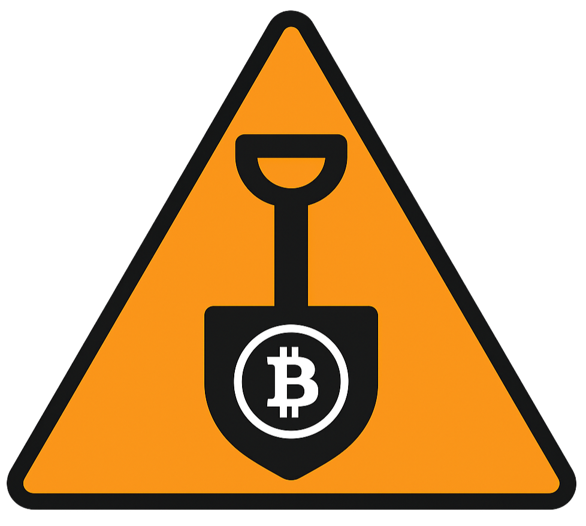

PROJECT
Bitcoin-Mined
Minimal real-time Bitcoin circulation tracker and block-subsidy emission estimator.

ZZX-LABS R&D // SOFTWARE // WEB MIRROR
Minimalist Bitcoin circulation and emission tracker using block height to calculate subsidy-only issued supply, remaining issuance, current epoch, next halving, and forward emission estimates.
BITCOIN CIRCULATION / EMISSION
REAL-TIME ISSUANCE ESTIMATE
CURRENT SUBSIDY EPOCH
FORWARD EMISSION
Project subsidy-only supply at a future block height or after a number of average 600-second days.
LONG-RUN EMISSION CURVE
OFFLINE MODE
CHAIN SOURCE
PROJECT
Minimal real-time Bitcoin circulation tracker and block-subsidy emission estimator.
SUPPLY DEFINITION
“Issued BTC” is subsidy created by consensus through the chosen height. It does not attempt to determine whether historical outputs are lost, burned, unspendable, or otherwise inaccessible.